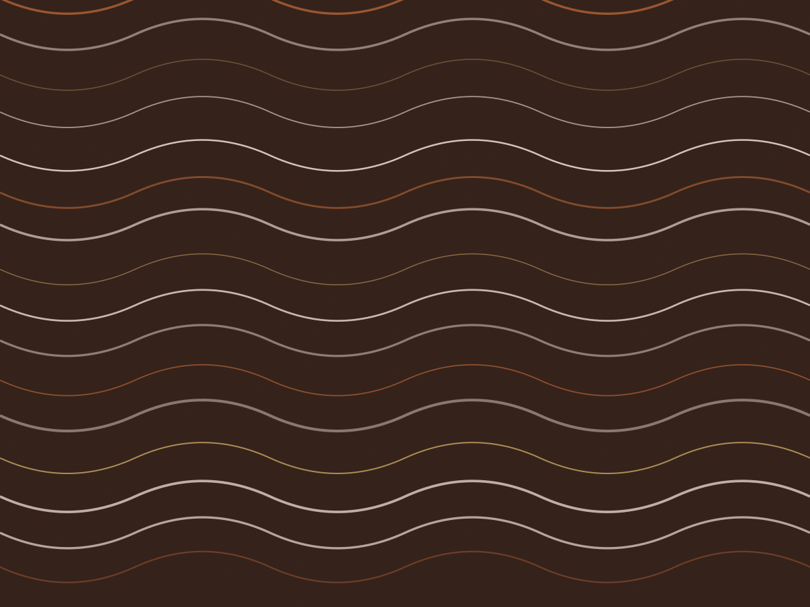

Etapa 01
Fermentação de seis dias em caixa de madeira
A cabaça é aberta no campo e a amêndoa vai com a polpa para a caixa de cedro, coberta com folha de bananeira. A massa chega a 48 °C no terceiro dia; o pH cai de 5,2 para 4,6. Sem essa queda, o chocolate fica com gosto de amido.